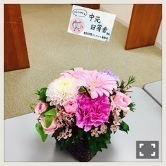

| 2016/09 24 Sat | ひめたん-0o0-その670 |
東京国際ブックフェアのトークショー
「乃木坂活字部！」に
参加させていただきました。
"アイドルと本"というテーマで
お話をしましたo(^o^)o
壇上に立って気づいたけれどこの3人、
意外と波長が合うなというか
同じトーンでいられるので落ち着く～
お堅いテーマのような響きですが
途中笑い声も聞こえてきたり
終始和やかな時間でした。
オススメの本を3冊挙げました！
○「ラジオラジオラジオ！」(加藤千恵)
○「女王はかえらない」(降田天)
○「コンビニ人間」(村田沙耶香)
どの作品も世界観に引き込まれて
あっという間に読破してました
皆さん是非読んでみて下さい。
2人の読書家っぷりには
ただただ関心させられました
私もこの機会にもっと本読むぞ(^o^)
来てくださった皆さん
ありがとうございました！


お花は3人のサイリウムカラー！素敵！
昨日のブックフェアを受けて
加藤千恵さん、降田天さんがTwitterで
私の名前を呟いてくださった......！
なんということでしょう(´;ω;`)
こんなことがあって
良いのでしょうか......♡
光栄過ぎます！
ありがとうございます！

アンダーライブ3公演お疲れ様でした！
私は広島の人間なので
乃木坂ちゃんが地元でライブするというのが
純粋にワクワクしたし、
メンバーのブログを読んでたら
お好み焼き食べたよとか
広島に行けてよかったよとか
そんな言葉が聞けて幸せです。
広島県民は
地元愛強めな人が多いですからね。
明日は15th個別握手会です(^o^)
久々だよね、初めての方もいるのかな？
いろんなお話聞かせてください
楽しみにしてます！
天気がどうなんでしょう。
～お知らせ～

蘭世お誕生日おめでとう！
何に対しても誠実で
自分の信念を強く持っている蘭世、
素敵です。これからもよろしくね。
(＊´・ω・＊)
コメント(488)
2016/09/24 23:42